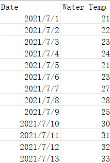
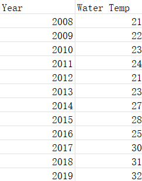
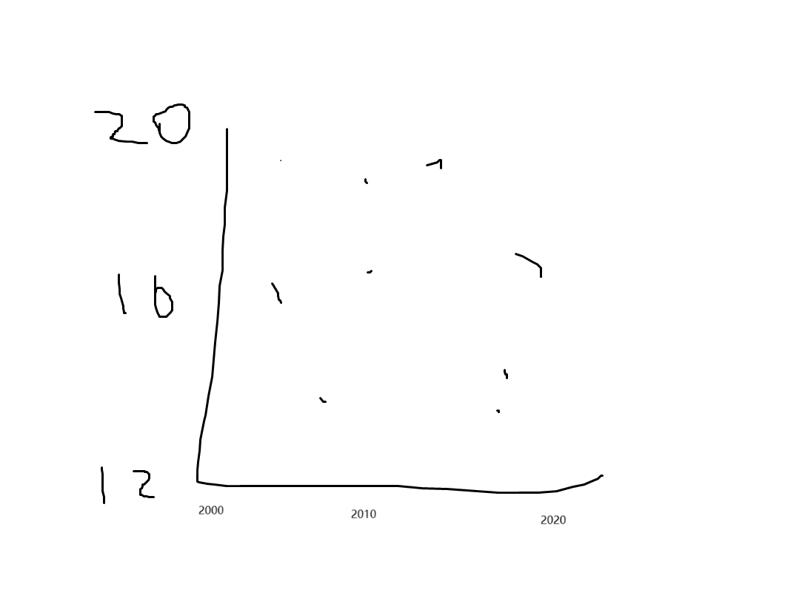

This is a Quarto file that downloads a dataset using opendatatoronto, cleans it, and makes a graph.
Plan
The dataset I am interested in would need to have the date, and the water temperature. A quick sketch of a dataset that would work is Figure 2 (a), I am interested in the water temperature each month, the table would be like Figure 2 (b):

(a) Quick sketch of a dataset

(b) Quick sketch of a table of the average water temperature each month
Figure 1: Sketches of a potential dataset and table related to water temperature.
Them I will draw a geom_point graph like Figure 2 (a):

(a) Quick sketch of a graph
Figure 2: Sketches of a potential dataset and graph related to water temperature.
Simulate
citation()
To cite R in publications use:
R Core Team (2024). _R: A Language and Environment for Statistical
Computing_. R Foundation for Statistical Computing, Vienna, Austria.
<https://www.R-project.org/>.
A BibTeX entry for LaTeX users is
@Manual{,
title = {R: A Language and Environment for Statistical Computing},
author = {{R Core Team}},
organization = {R Foundation for Statistical Computing},
address = {Vienna, Austria},
year = {2024},
url = {https://www.R-project.org/},
}
We have invested a lot of time and effort in creating R, please cite it
when using it for data analysis. See also 'citation("pkgname")' for
citing R packages.
citation("ggplot2")
To cite ggplot2 in publications, please use
H. Wickham. ggplot2: Elegant Graphics for Data Analysis.
Springer-Verlag New York, 2016.
A BibTeX entry for LaTeX users is
@Book{,
author = {Hadley Wickham},
title = {ggplot2: Elegant Graphics for Data Analysis},
publisher = {Springer-Verlag New York},
year = {2016},
isbn = {978-3-319-24277-4},
url = {https://ggplot2.tidyverse.org},
}
After examining the raw data, I found that there is only data between May and September. So, I am only generating simulated data between May and September